作者：罗平、任家敏、彭章琳
编写：吴凌云、张瑞茂、邵文琪、王新江
注：本文出自香港中文大学（CUHK）多媒体实验室和商汤科技研究院（SenseTime Research）。转载需注明作者及出处。原论文参考arXiv:1806.10779和代码Github。
前言：归一化技术已经成为深度学习系统必不可少的重要组成部分，对优化神经网络的参数、提高泛化性能有着重要作用。这些归一化方法包括但不限于批归一化BN（Batch Normalization），实例归一化IN（Instance Normalization），和层归一化LN（Layer Normalization）。本文作者对归一化方法提出两点思考：第一，归一化虽然提高模型泛化能力，然而归一化层的操作是人工设计的。在实际应用中，解决不同的问题原则上需要设计不同的归一化操作，并没有一个通用的归一化方法能够解决所有应用问题；第二，一个深度神经网络往往包含几十个归一化层，通常这些归一化层都使用同样的归一化操作，因为手工为每一个归一化层设计操作需要进行大量的实验。本文作者提出自适配归一化方法——Switchable Normalization（SN）来解决上述问题。与强化学习不同，SN使用可微分学习，为一个深度网络中的每一个归一化层确定合适的归一化操作。SN不但易于使用而且性能优越（见第4章）。更重要的是它对归一化方法的理论分析有着重要参考意义（见第3章）。本文涉及的文献见第6章。本文共五章，目录如下。
Switchable Normalization（SN）统一了实例归一化Instance Normalization（IN），层归一化Layer Normalization（LN），和批归一化Batch Normalization（BN）的各种操作。假设一个卷积神经网络（CNN）的一个隐含卷积层的输入数据可表示为具有四个维度的特征图，。这里每个维度分别代表样本数目（minibatch size），通道数目（number of channels），通道的高（height），和通道的宽（width）。假设每一个像素表示为，这里为上述四个维度的下标。SN对进行归一化操作，并输出归一化后的像素值。SN的计算公式如下：
上述定义与BN，IN，和LN的定义相似。他们都学习了缩放系数和偏移系数。主要的区别在于SN的统计信息（即均值和方差），不像IN只是在一个通道中计算的，也不像LN只是在一个层中计算，而是在一个集合当中选择合适的归一化方法来加权平均的。这个集合定义为。和则为相应统计量对应的权重系数。下图直观的展示了SN的基本原理。
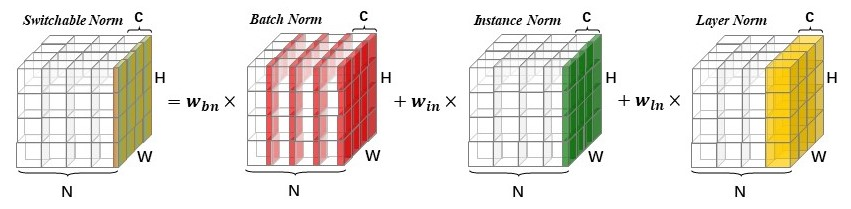
图1为SN的直观图形解释。SN中每个样本每个通道（）的均值和方差，由BN、IN、LN三种不同统计方法计算得到的均值和方差共同决定。
在SN中，均值的加权系数的计算方法如下：
为三个维度统计量对应的参数。为了与网络参数（如卷积核）区分，这些参数称为控制参数。这些控制参数均初始为1，在反向传播时进行优化学习。该计算公式即利用softmax函数对优化参数进行归一化，计算统计量最终的加权系数。因此，所有加权系数的和为1，每个加权系数的值都在0和1之间。类似的，可以由另外的三个参数，，和计算得出，且，。因此，相对于BN，SN只额外增加了，，和，， 6个控制参数。
相比于其他归一化方法，SN有以下性质：
本章结合SN的基本原理，分析SN的性质。
由前面的介绍可知，minibatch size的变化对BN的影响最大，因为BN使用的均值和方差是在minibatch当中统计的。minibatch越小，这些统计量的估计会带有更大的噪声，对模型训练产生过大的规范化（regularization）作用或称正则化作用，从而影响模型的泛化性能。而IN，LN和GN（group normalization）在计算统计量时虽然与minibatch无关，却由于缺乏正则化能力在大的minibatch时无法达到BN的精度（与BN不同，这些技术单独使用往往导致较明显的过拟合现象）。SN通过学习不同归一化方法的相互作用（权重系数），克服了上述问题。无论minibatch大还是小，SN都能自适配的学习出合适的归一化方式，保持高精度。总的来说：
minibatch越小，SN中BN的权重系数越小，IN和LN的权重系数则越大；
minibatch越大，SN中BN的权重系数越大，IN和LN的权重系数越小。
下图为SN在不同minibatch size下自主选择BN，IN，LN的权重系数的展示。括号表示（GPU数目，每个GPU样本数即minibatch）。在训练中，梯度通过在所有GPUs中平均进行估计，而所有归一化方法的统计量只在单独一个GPU当中计算。可以看出，随着minibatch的不断减小，BN的权重越来越低，IN和LN的权重越来越高。当minibatch size等于1时，BN的权重为零，因为此时在训练当中BN等效于IN。
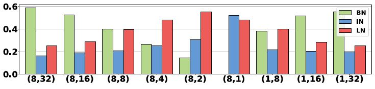
由前面的介绍可知，BN在计算统计量过程会引入随机噪声。这些随机噪声为模型带来正则化作用（regularization），该作用的强度与minibatch size成反比。直观的说，由BN的均值和方差分别产生的正则化对模型训练会产生不同的影响。具体来说，计算样本均值引入的噪声要弱于估计样本方差引入的噪声（噪声越大，正则化作用越强）。SN通过分别调节它们的权重，来增加或者减少模型的正则化作用。进一步地，SN的自主选择过程旨在抑制噪声。统计量带来的噪声越大抑制越厉害。可以理解为：
minibatch较小时，BN中variance的权重会更小于mean的权重
下图为SN在ResNet50不同的blocks中选择BN，IN和LN权重系数的展示。(a)中minibatch size为32，(b)中minibatch size为2。可以看出对于BN，其均值和方差的加权系数不一样。对比(a)和(b)我们发现，当minibatch size为32时，BN的均值和方差的具有较大的权重；当batchsize为2时，BN中variance的权重会被降低，从而降低估计variance时引入的噪声的影响。
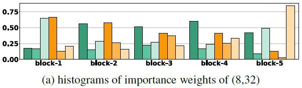
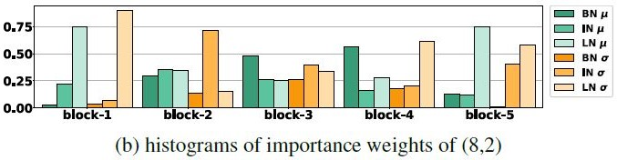
基于SN的设计，我们发现SN不仅可以解决因minibatch太小而导致的BN中噪声太大的问题，并且通过引入其他的归一化方法提升了模型的性能。而且在minibatch较大时发挥出BN的优势，弥补其他归一化方法的缺陷。可以理解为：
SN是一种覆盖特征图张量各个维度来计算统计信息的归一化方法，不依赖minibatch size的同时对各个维度统计有很好的鲁棒性。
下图展示出SN，BN，GN在不同minibatch size下的性能，三者都使用ResNet50在ImageNet中训练。纵坐标为ImageNet验证集top-1准确率。可以看出，BN对minibatch size非常敏感，在minibatch较小时性能较差；GN的性能相对稳定，但在minibatch较大时性能不如BN；而SN不仅克服了BN对batchsize较为敏感的问题，在各个minibatch size下都能表现稳定，而且达到较优的模型性能。
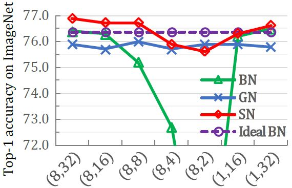
SN与DARTS解决的是不同的问题，但它们之间有着较深的联系。DARTS使用可微分学习来解决神经网络结构搜索问题。在DARTS中，一个神经网络被定义成图（graph）。图上的点（node）和边（edge）分别表示神经网络隐含层的输入和在这个输入上定义的操作。DARTS与SN相似的地方在于，它们都使用了softmax函数来选择不同的操作。不同的是，DARTS选择convolution、pooling等操作，而SN选择归一化操作。那么是否能够说明它们本质一样？答案是否定的。
回答上面的问题关键在于本章强调的归一化操作对训练带来的规范化（正则化）作用。SN实际上学习了不同正则化作用之间的一阶关系，这种正则化作用使得网络模型的参数（表示为）和控制参数（SN里用表示）能够在训练集当中一起优化，并不会导致过拟合。然而DARTS的控制参数也是softmax函数的参数（DARTS论文里用表示），但是这些参数则不能与网络参数一起在训练集优化。因为若同时在训练集优化和，会使得倾向与选择复杂度高的操作来过拟合训练集，导致较差的泛化性能。总体来说，
SN对归一化操作的选择旨在提高泛化性能；然而DARTS对卷积或池化（pooling）等操作的选择，容易导致过拟合。
由于上述原因，SN与DARTS采用不同的训练方式。SN的方式更为简单直接，网络参数与控制参数同时使用SGD和BP优化就可以了。然而，训练DARTS使用的是两轮迭代的方法（与绝大多数强化学习方法相似）：1）固定，并在训练集优化，即。这里代表神经网络定义的损失函数。2）固定，并在校验集优化。这里DARTS使用了稍微复杂的方式，即，而。第二步中的实际上是在当前模型结构下对网络参数的预测。换句话说，更新网络结构考虑了网络参数将会如何跟随着变化。这是一种网络参数与控制参数的二者竞争。这种竞争与对抗网络GAN（generative adversarial network）的竞争不同。在传统的GAN博弈中，两个竞争者同时产生决策。而DARTS借鉴的博弈方法中，网络结构的学习一般在博弈过程中占主导地位（先确定网络结构，再训练网络参数）。这一点也在更新时会预测的优化过程中体现。
在DARTS的论文中表示，上述迭代优化方式借鉴了经济学里经典的“主导-跟随”模型（Stackelberg Leadership Model）。该模型是一种理想模型，一般的情况描述了占主导地位的大企业（）与小企业（）之间的博弈。大企业先决策（如定价），小企业跟随。主导企业考虑小企业的决策函数（DARTS中代表随变化的函数），把小企业的决策考虑在自己的决策当中（如考虑整体市场供给和需求等），从而达到利润最大化。在DARTS中，可以认为这是鼓励学习多样的网络结构。而在SN中，可以认为其优化过程是该竞争模型的简化和近似。这种简化使得SN更容易优化与应用。能够进行近似的原因是隐晦的，这是由于SN学习的归一化操作对网络参数带来了规范化作用，隐含的限制了网络参数的模（或可探索范围），变相的鼓励网络结构的优化。总结来说：
在SN中，和同时在训练集中优化；
在DARTS中，在训练集优化，在测试集优化，需要迭代进行。
为了进一步说明SN的通用性，我们在多个具有挑战性的视觉问题上对其效果进行了验证，包括在ImageNet上进行图像分类，在MS-COCO进行物体检测与分割，图像风格化，以及网络结构搜索。
自2009年首次提出以来，ImageNet就一直是图像分类任务的标准评测集合。我们将利用ImageNet上经典的1000类分类任务对BN,GN和SN进行综合的比较。实验所使用的神经网络结构是ResNet50, 为了公平对比，原始网络中的BN将会替换为GN和SN，而保持其他训练设置不变。
下表总结了SN和BN、GN在不同的minibatch size情况下的分类准确率，表格底部给出了不同归一化技术之间的准确率差距。基于实验结果，我们可以得到以下结论：
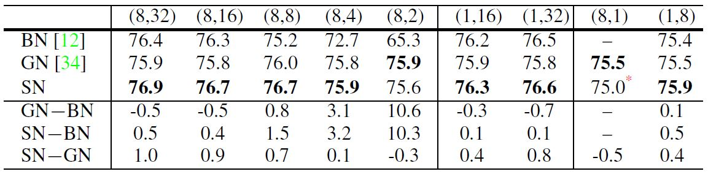
除了BN和GN，其他归一化方法在图像分类问题上效果如何呢？
SN vs. IN和LN：IN和LN虽然在图像风格化和LSTM应用中取得了不错的效果，但并不适用于图像分类。在通用设置(8,32)上，SN、IN和LN在ResNet50上的准确率分别是76.9%、71.6%和74.7%，SN的结果分别比IN和LN高5.3%和2.2%。
SN vs. BRN和BKN：BRN （Batch Renormalization）和BKN（Batch Kalman Normalization）是BN的两个变种方法，他们都可以减弱BN对minibatch size的敏感性。在(8,4)这种小minibatch size的情况下，BRN在最优超参设置下可以达到73.7%的准确率，比原始BN 72.7%高了1%，但是依然比SN 75.9%低了2.2%。而BKN在(8,32)下的准确率为76.8%，与SN的76.9%的结果相当。可是BKN在训练过程中需要估算协方差矩阵，这导致了计算过程需要更多的参数以及更大的运算量。
与图像分类不同，对于物体检测和分割任务，输入图像的尺度相对比较大，因此每张图片所需要的显存也明显上升。在显存有限的情况下，minibatch中图片的数量将明显下降，通常每张GPU能够处理的图片数量在1到2张，在这种情况下，BN的效果会明显下降。为了应对这种问题，早期的解决办法是将BN层固定，使其变为一个线性变化层，失去了有效归一化的作用。
与上述的解决方案相比，SN是一种更为可行的替代方案，且能够有效拓展到不同的检测模型，以及不同的深度学习平台上。我们实现了基于Pytorch和CUDA-Detectron的两个版本。使用了三种设置进行SN与BN和GN的比较：
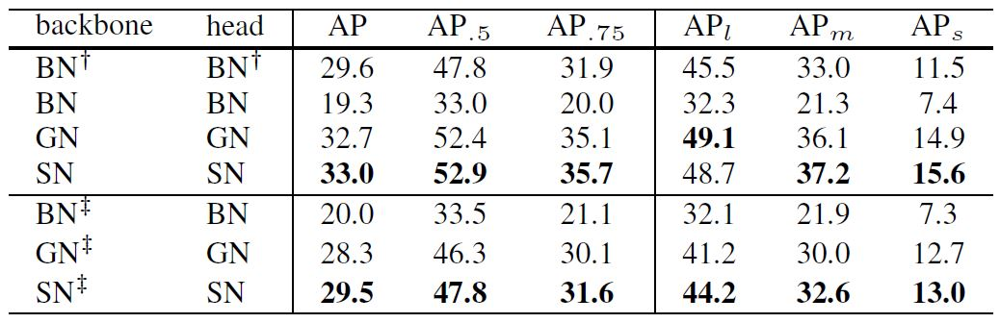
如上表所示，我们给出了SN和BN、GN在设置1中的性能结果。 其中 BN 表示BN层中的相关参数是固定的。我们得到以下结论：
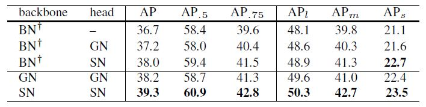
如上表所示，我们给出了SN和BN、GN在设置2的性能结果。 我们获得的结论有：
如下表所示，我们给出了SN和BN、GN在设置3的性能结果。 我们能够得到与设置2相类似的结论。经过上述3个实验，我们一定程度上证明了在一个模型中使用可配置化的归一化方法，能够提升归一化方法对任务的适应性，进而提升性能。同时也充分证明了SN可以有效地应用于检测和分割这两大重要的视觉任务上。
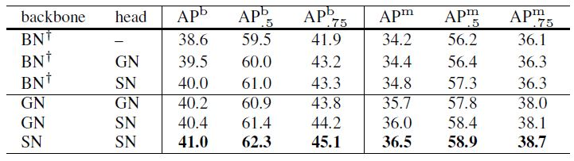
图像风格迁移是指使用参考图像的风格去渲染目标图像，使得目标图像的风格能够有效地迁移到目标图像上。近期的工作[]在网络中使用IN，并采用联合优化特征重建函数和风格重建函数的方法，得到了令人满意的风格化结果。其中特征重建函数约束了风格化后的结果图像的内容要与原图尽可能相似，而风格重建函数目标则是使风格化图像在风格上要与目标风格图尽可能靠近。该工作也展示了在图像风格化任务上，IN的效果要好于BN。
如前文所述，SN是一种能够有效适应不同任务地归一化方式。因此它同样适用于图像风格迁移任务。我们将原来VGG16网络中的IN替换为SN。下图(a)对比了两种重建函数之和的loss曲线，可以看到SN对比IN和BN有明显优势。并且给出了风格化后的可视化结果。
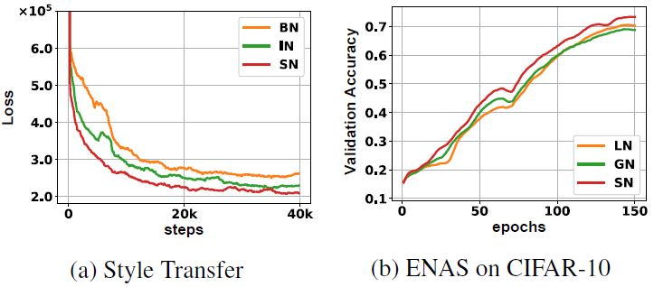
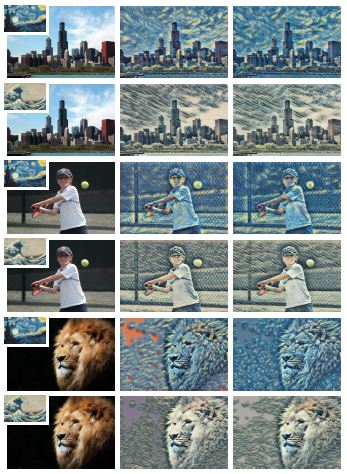
随着近年Google提出AutoML项目，深度神经网络结构的自动化搜索受到了学界和工业界的广泛关注。其中，LSTM被应用于高效的网络结构搜索（ENAS）中。ENAS将一个卷积神经网络定义为由若干个相同的卷积结构块堆叠而成，ENAS通过搜索卷积结构块中的结构来实现高效网络结构搜索。
整个ENAS包含两步：训练控制器和训练子模型。1) 控制器 实际上是一个LSTM。LSTM通过增强学习算法（Reinforce learning）来更新参数，从而确定卷积结构块中的结构。2) 子模型是指通过叠加卷积结构块得到的完整的卷积神经网络，它是通过SGD更新参数。
为了验证SN同样适用于LSTM，我们在LSTM控制器中分别加入SN、LN和GN来提升结构搜索的性能。实验中我们用LSTM控制器来学习网络结构，在CIFAR10数据集上测试学习到的网络结构的分类准确率。由于BN无法应用到LSTM中，同时在全连接层中IN等价于LN，在实验中SN采用了LN和GN的组合。上图(b)展示了在CIFAR10上的分类准确率，对比LN和GN的结果，可以看到SN明显提高了ENAS的性能。
总的来说，SN是一种任务与数据驱动的归一化方法。它对各种归一化技术对训练所产生的影响进行激励或者抑制，从而取得最优性能。本文作者的团队通过对各种归一化方法进行深入的分析，发现SN学习得到的权重系数能够准确的反映各种归一化技术在不同训练条件下的理论性质。相信随着这一研究的不断深入，这些数学性质将会被更清楚的描述出来。